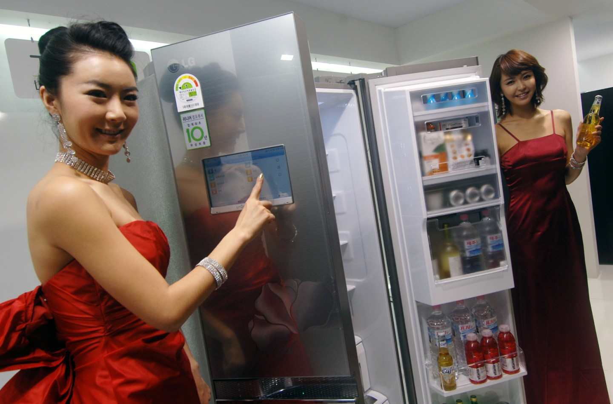

Internet das Coisas: Um Desenho do Futuro
Quando falamos de revolução tecnológica, a noção de Internet das Coisas, ou Internet of Things (IoT), é um dos assuntos principais. É um fenômeno atual, mas que continua a se desenvolver e vai desenhar nosso futuro de uma forma completamente inédita. E não é difícil entender o porquê. Suas possibilidades são inúmeras, a Internet das Coisas está transformando nossa relação com a tecnologia, mudando o modo como interagimos com o mundo e, principalmente, o modo como o mundo interage conosco. É um conceito capaz de mudar não só como nós vivemos, mas também como trabalhamos.
Mas afinal, o que é Internet das Coisas (IoT)?
De uma forma bem simples, Internet das Coisas é o modo como os objetos físicos estão conectados e se comunicando entre si e com o usuário, através de sensores inteligentes e softwares que transmitem dados para uma rede. Como se fosse um grande sistema nervoso que possibilita a troca de informações entre dois ou mais pontos. O resultado disso é um planeta mais inteligente e responsivo. Agora podemos entender melhor como essas coisas funcionam, e como funcionam juntas para melhor nos servir. Mas de que “coisa” estamos falando? A resposta é qualquer coisa. Desde um relógio ou uma geladeira, até carros, máquinas, computadores e smartphones. Qualquer utensílio que você consiga imaginar pode, teoricamente, entrar para o mundo da Internet das Coisas. Eles conversam entre si para nos dar mais conforto, produtividade, informação e praticidade em geral, e seus usos podem abranger monitoramento de saúde, fornecimento de informação em tempo real sobre o trânsito da cidade ou o número de vagas disponíveis em um estacionamento e em que direção elas estão, até recomendação de atividades, lembretes, ou conteúdo em seus dispositivos conectados. Coisas do cotidiano se tornam inteligentes e têm suas funções ampliadas por cruzamento de dados. É o que acontece quando um assistente virtual cruza dados dos seus dispositivos conectados para te informar, mesmo que você não tenha pedido, o tempo que você levará para chegar ao trabalho quando você senta no seu carro para sair de casa. Ele não sabe onde você vai por magia, e sim pela interconectividade dos dispositivos inteligentes à sua volta; ou seja, pela Internet das Coisas. O assistente conhece sua rotina, e dado o horário, dia da semana, sua localização por GPS conexão (ou não) ao Wi-fi de casa, a conexão ao bluetooth do carro no momento específico, e ao fato de que esse cenário se repetiu muitas vezes, ele aprendeu que é muito provável que você esteja indo para o trabalho de carro e te informa quanto tempo você vai demorar para fazê-lo.
A Internet das Coisas ou Internet of Things (IoT) desponta como uma evolução da internet e um novo paradigma tecnológico, social, cultural e digital. A Internet das Coisas revolucionará os modelos de negócios e a interação da sociedade com o meio ambiente, por meio de objetos físicos e virtuais, em que esses limites se tornam cada vez mais tênues. A Internet das Coisas proporciona aos objetos do dia a dia, com capacidade computacional e de comunicação, se conectarem à internet. Essa conexão viabilizará controlar remotamente os objetos, e acessá-los como provedores de serviços, e se tornarão objetos inteligentes ou smart objects. Os objetos inteligentes possuem capacidade de comunicação e processamento aliados a sensores. Atualmente não só computadores convencionais estão conectados à internet, como também uma grande heterogeneidade de equipamentos, tais como TVs, laptops, geladeira, fogão, eletrodomésticos, automóveis, smartphones, entre outros. Nesse novo cenário, a pluralidade é crescente e previsões indicam que mais de 50 bilhões de dispositivos estarão conectados em 2020 . Com o uso dos objetos inteligentes será possível detectar seu contexto, controlá-lo, viabilizar troca de informações uns com os outros, acessar serviços da internet e interagir com as pessoas. Em paralelo, uma gama de novas possibilidades de aplicações surge, como, por exemplo, cidades inteligentes (smart cities); saúde (smart healthcare); casas inteligentes (smart home) e desafios emergem (regulamentações, segurança, padronizações). Essas novas habilidades dos objetos inteligentes gerarão um grande número de oportunidades de pesquisas e projetos no âmbito acadêmico e empresarial.
HISTÓRIA DA INTERNET DAS COISAS
Em 1990, John Romkey criou o primeiro dispositivo em internet das coisas. Esse autor criou uma torradeira que poderia ser ligada e desligada pela Internet e a apresentou na INTEROP '89 Conference. Dan Lynch, presidente da Interop na época, prometeu a John Romkey que, se a torradeira fosse ligada pela internet, o aparelho seria colocado em exposição durante a conferência. Diante desse desafio, John Romkey conectou a torradeira a um computador com rede TCP / IP, e foi um tremendo sucesso. Porém, durante esse teste, o pão foi incluído manualmente na torradeira. Após um ano, esse requisito foi corrigido e apresentado na mesma conferência, por meio de um pequeno guindaste robótico no sistema (Figura 1). Esse robô era controlado pela Internet, pegou a fatia de pão e colocou na torradeira, automatizando, dessa forma, o sistema de ponta a ponta (DEORAS, 2016).
Em 1991, Weiser (1991) escreveu o artigo The Computer for the 21st Century, que aborda o futuro da Internet das Coisas. Esse autor chama de “computação ubíqua”. No artigo, o autor afirma que os dispositivos serão conectados em todos os lugares de forma tão transparente para o ser humano, que se tornará “invisível”, possibilitando, de forma natural, a realização das atividades, sem haver preocupação em instalar, configurar e manter os recursos computacionais (WEISER, 1991; GALEGALE et al., 2016). Este artigo é um marco na pesquisa sobre Internet das Coisas e é citado praticamente em toda a literatura sobre esse assunto (SINGER, 2012).
Em 1996, Venkatesh (1996) também estudou o uso da computação no ambiente de trabalho e no lar, parecido com o conceito de Internet das Coisas. Ele previu que as tarefas da casa, por exemplo, preparação de alimentos ou compras para reposição de estoques, seriam realizadas através de casas especializadas. Outra possível origem do termo Internet das Coisas é encontrado no trabalho (GREENFIELD, 1999). A autora delineou um cenário no qual objetos processam informação. Outro autor também de destaque foi Gershenfeld (1999), que publicou o livro When things start to think. Esse livro prevê e descreve algumas experiências de computação, nanotecnologia e preocupações relacionadas a emoções numa realidade de integração com os objetos que geram informação.
Em setembro de 1999, Kevin Ashton, cofundador e diretor executivo do Auto-ID Center, proferiu uma palestra para a Procter & Gamble, e apresentou uma nova ideia do sistema RFID para a rastreabilidade do produto na cadeia de suprimentos. Para chamar a atenção dos executivos, ele colocou no título da apresentação a expressão Internet of Things. Para Ashton (2009), os objetos do mundo físico poderiam se conectar à internet, criando um mundo mais inteligente (FINEP, 2015). Esse termo foi utilizado primeiramente por Kevin Ashton, considerado o criador desse termo (POSTSCAPES, 2017a). Após 1999, a tecnologia RFID se destacou, sobretudo nas aplicações de cadeia de abastecimento. Seu prestígio aumentou no lançamento oficial da EPC – Network Electronic Product Code, ou código eletrônico do produto, criado pelo Auto-ID Center em setembro de 2003. O código eletrônico do produto permite a identificação automática dos objetos, mesmo de forma semelhante, possibilitando seu monitoramento na cadeia de suprimentos e gerenciando inventários.

Em janeiro de 2005, Wall Mart e o Departamento de Defesa dos Estados Unidos exigiram que os fornecedores utilizassem as etiquetas RFID nos paletes de seus produtos para o controle do estoque. Esse foi o marco do início do conceito da Internet das Coisas, com o uso do sistema RFID em massa na cadeia de suprimentos. Em junho de 2000, a LG apresentou uma geladeira inteligente durante um evento na Coreia do Sul, conectada à internet e gerenciada por meio de um sistema próprio. Na época, o presidente da LG dos Estados Unidos, Simon Kang, disse que a geladeira esfriava os alimentos, mas também os consumidores poderiam usá-la como televisão, rádio, vídeo, bulletin board, agenda e câmera digital (SINGER, 2012; GUMPTION, 2016).
A partir de 2005, a discussão sobre Internet das Coisas se generalizou e ganhou atenção dos governos em relação à privacidade e segurança de dados. Nesse ano, a International Telecommunications Union (ITU) publicou um relatório com o conceito de Internet das Coisas, com uma visão abrangente e holística. No seu ponto de vista, internet das coisas poderia conectar qualquer objeto, por meio de tecnologias, como RFID, sensores, rede de sensores sem fio, sistemas embarcados e nanotecnologia, além de transpor alguns desafios importantes como padronização, privacidade, espectro de frequência e questões sociais e éticas (FREITAS DIAS, 2016). Ainda em 2005, foi o lançamento do Nabaztag – um objeto com forma de coelho conectado à internet, que poderia ser programado para receber previsão do tempo e ler e-mails, entre outros. O Nabaztag foi o primeiro objeto inteligente comercializado em larga escala (SINGER, 2012).

Em 2008-2009, segundo a Cisco IBSG – Internet Business Solutions, havia mais objetos conectados, tais como smartphones, tablets e computadores, do que a população mundial. Por isso esse período é considerado o ano do nascimento da Internet das Coisas (ALI; ALI, 2015; POSTSCAPES, 2017a). Em 2008, Rob Van Kranemburg publicou o livro The Internet of Things, que aborda sob um novo paradigma em que os objetos produzem informação. Esse livro é uma das grandes referências teóricas sobre Internet das Coisas (SINGER, 2012). Ainda em 2011, o termo Internet das Coisas foi adicionado ao Gartner Hype Cycle 2011 e em 2014.
Também em 2011 foi discutida a criação de padrões internacionais para a criação de objetos conectados no panorama global. O International Telecommunications Union (ITU) vem reunindo especialistas para a consolidação de um padrão global.
Em março de 2012, a União Europeia propôs uma consulta pública para que os cidadãos apontassem suas necessidades e seguranças em Internet das Coisas.
Em 16 e 17 de junho, Londres sediou o 1º Open IoT Assembly. A partir de 2015, a Internet das Coisas já é uma realidade e cerca de 4,9 bilhões de coisas estão conectadas e em uso, um aumento de 30% em relação a 2014, e que atingirá 25 bilhões até 2020. A Internet das Coisas tornou-se uma força poderosa para a transformação dos negócios e seu impacto disruptivo em todas as indústrias e na sociedade (GARTNER, 2014b).
Atualmente a Internet das Coisas recebe atenção e suporte da Comissão Europeia (CE) por meio do Programa Horizon 2020, o maior programa de Pesquisa e Inovação da União Europeia (EU), com cerca de 80 milhões de euros de financiamento disponíveis ao longo de 7 anos – período de 2014-2020 (HORIZON 2020).